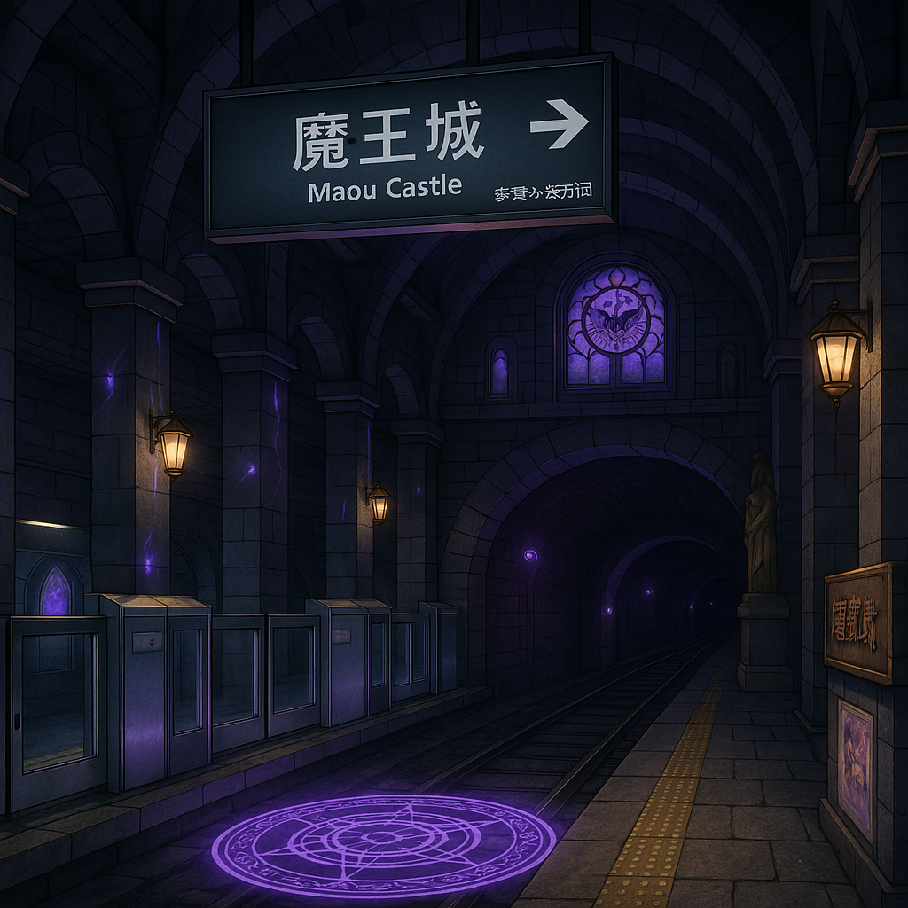
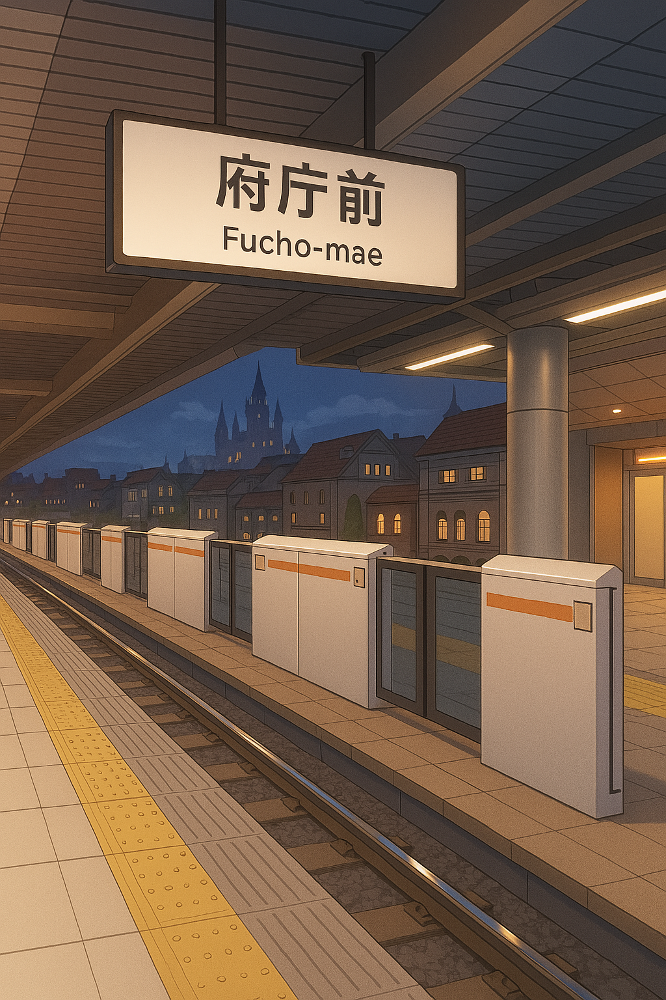
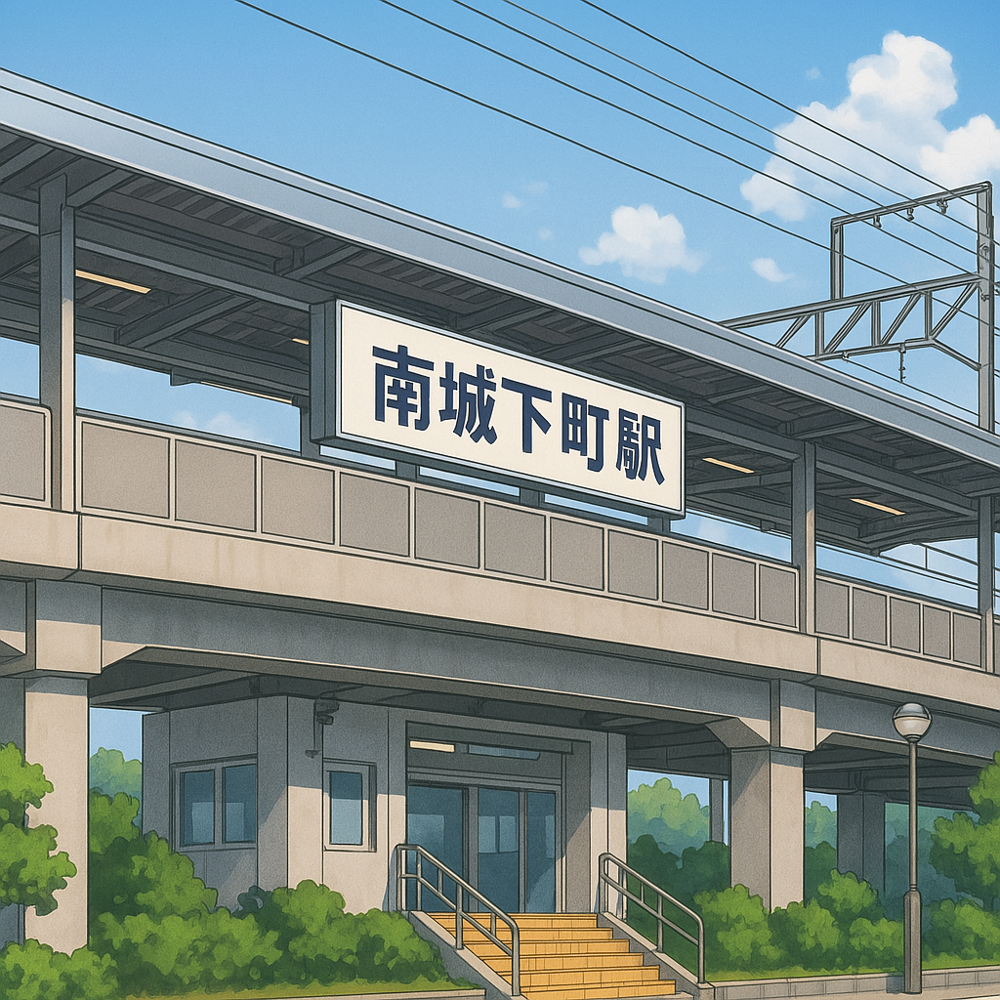
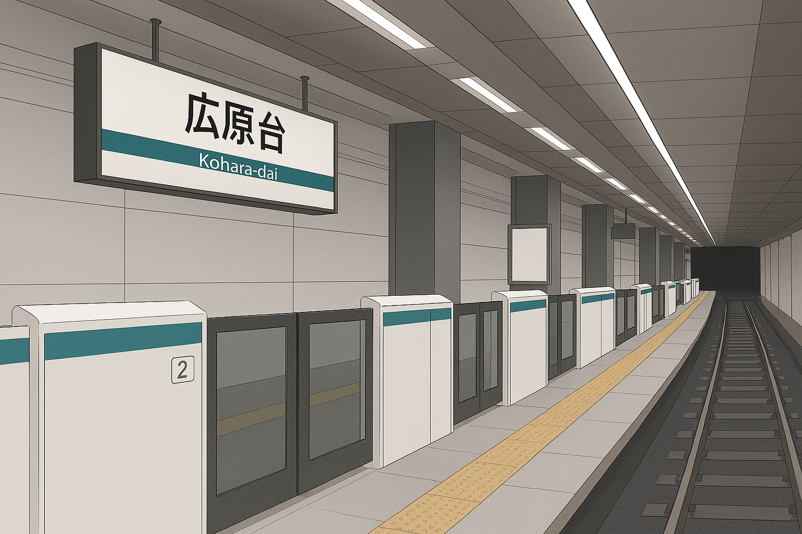
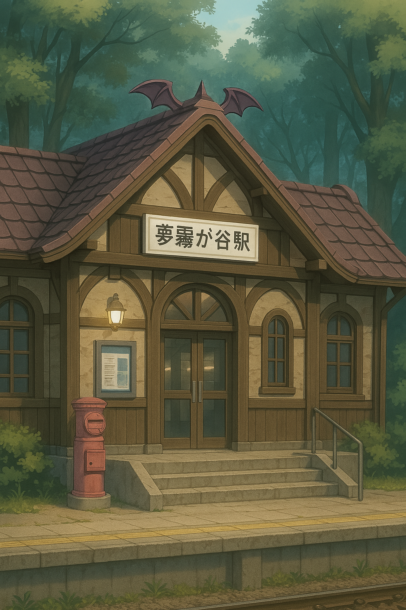

魔界府メトロ - 路線図
魔王城
玲「いってきまーす♡」／リリス「お弁当忘れないでね」

魔王城駅 - 城の玄関。地下にあるメトロ駅
府庁前
奏「中心！」／ミモザ「出入口多すぎ」

府庁前駅 - 城下町の近代化の象徴。島式ホーム
南城下町
町民「コロッケうまい」

南城下町駅 - 高架ホームが特徴の地元密着型駅
広原台
高坂「ここが未来の玄関口になる」

広原台駅 - 空港アクセスも可能な大ターミナル
夢霧が谷
サキュバス学生「今日も授業～」

夢霧が谷駅 - 森に囲まれたサキュバス学校最寄駅
......
▶ 次へ